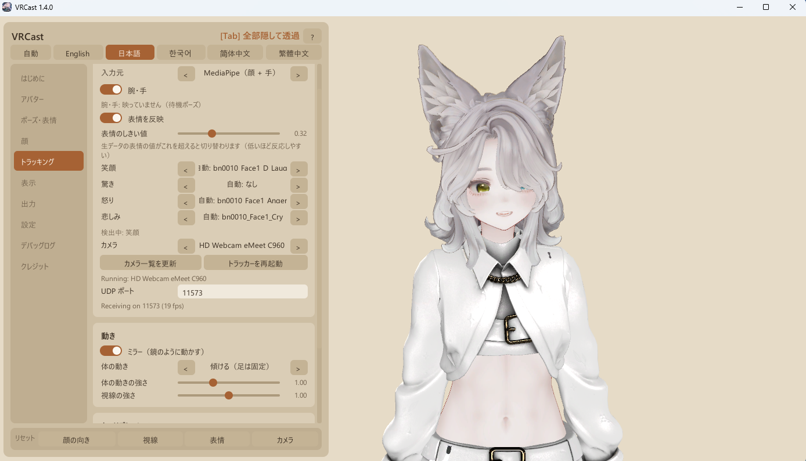

VRCast
VRChat のアバターを、Unity・VRChat を開かずにそのまま配信へ。
Your VRChat avatar on stream, without opening Unity or VRChat.
VRChat 아바타를 Unity·VRChat을 열지 않고 그대로 방송에.
无需打开 Unity 或 VRChat，直接用 VRChat 虚拟形象直播。
無需開啟 Unity 或 VRChat，直接用 VRChat 虛擬形象直播。
VRCast とはWhat is VRCast?VRCast란?什么是 VRCast？什麼是 VRCast？
VRCast は、VRChat 向けの 3D アバターを単体で表示し、OBS などの配信ソフトや Discord / Zoom に映す Windows 用アプリです。
アバターを一度 .vrcaster ファイルに書き出せば、あとは Unity や VCC を起動せずに使えます。
VRCast is a Windows app that shows a VRChat 3D avatar on its own and sends it to streaming software such as OBS,
or to Discord / Zoom. Export your avatar once to a .vrcaster file, and you no longer need Unity or VCC running.
VRCast는 VRChat용 3D 아바타를 단독으로 표시하고 OBS 같은 방송 소프트웨어나 Discord / Zoom에 보내는 Windows 앱입니다.
아바타를 한 번 .vrcaster 파일로 내보내면, 이후에는 Unity나 VCC를 실행하지 않고 사용할 수 있습니다.
VRCast 是一款 Windows 应用，可单独显示 VRChat 用的 3D 虚拟形象，并输出到 OBS 等直播软件或 Discord / Zoom。
只需将虚拟形象导出为 .vrcaster 文件一次，之后无需启动 Unity 或 VCC 即可使用。
VRCast 是一款 Windows 應用程式，可單獨顯示 VRChat 用的 3D 虛擬形象，並輸出到 OBS 等直播軟體或 Discord / Zoom。
只需將虛擬形象匯出為 .vrcaster 檔案一次，之後無需啟動 Unity 或 VCC 即可使用。
VRoid などの VRM（.vrm、VRM 0.x / 1.0）は書き出し不要で、そのまま読み込めます。
VRM avatars (.vrm, VRM 0.x / 1.0, e.g. from VRoid) load as they are, with no export needed.
VRoid 등의 VRM(.vrm, VRM 0.x / 1.0)은 내보낼 필요 없이 그대로 불러올 수 있습니다.
VRoid 等的 VRM（.vrm，VRM 0.x / 1.0）无需导出，可直接加载。
VRoid 等的 VRM（.vrm，VRM 0.x / 1.0）無需匯出，可直接載入。
.vrcaster
→
VRCast.exe
→
OBS / 仮想カメラOBS / virtual cameraOBS / 가상 카메라OBS / 虚拟摄像头OBS / 虛擬攝影機
OBS に背景透過で映せるTransparent in OBSOBS에서 배경 투명在 OBS 中透明背景在 OBS 中透明背景
ゲームキャプチャで背景を抜いて配信画面に重ねられます。VRCast の画面上は目に優しいベージュ背景のまま。
OBS Game Capture removes the background so the avatar sits on your scene, while the VRCast window keeps a soft beige background.
게임 캡처로 배경을 투명하게 해 방송 화면에 겹칠 수 있습니다. VRCast 창에서는 눈이 편한 베이지 배경 그대로입니다.
通过游戏采集去除背景，叠加到直播画面上。VRCast 窗口中仍保持柔和的米色背景。
透過遊戲擷取去除背景，疊加到直播畫面上。VRCast 視窗中仍保持柔和的米色背景。
VRChat の設定をそのままKeeps your VRChat setupVRChat 설정 그대로保留 VRChat 设置保留 VRChat 設定
表情・小物の初期状態・揺れもの（PhysBone 近似）・Constraint を書き出して再現します。元のアバターは変更しません。
Expressions, default toggles, PhysBones (approximated) and constraints are exported and reproduced. Your original avatar is untouched.
표정·소품의 초기 상태·흔들림 (PhysBone 근사)·Constraint를 내보내 재현합니다. 원본 아바타는 변경하지 않습니다.
导出并重现表情、配件的初始状态、物理摆动（PhysBone 近似）和 Constraint。不会修改原始虚拟形象。
匯出並重現表情、配件的初始狀態、物理擺動（PhysBone 近似）和 Constraint。不會修改原始虛擬形象。
あいうえおの口パクA-I-U-E-O lip sync아이우에오 립싱크A-I-U-E-O 口型同步A-I-U-E-O 口型同步
マイクの声から母音を判定し、VRChat と同じように口の形が変わります。自動まばたき付き。
Detects vowels from your microphone and changes mouth shapes like VRChat. Auto blink included.
마이크 음성에서 모음을 판별해 VRChat처럼 입 모양이 바뀝니다. 자동 눈 깜빡임 포함.
根据麦克风声音判断元音，像 VRChat 一样改变口型。附带自动眨眼。
根據麥克風聲音判斷母音，像 VRChat 一樣改變嘴型。附帶自動眨眼。
Web カメラでトラッキングWebcam tracking웹캠 트래킹摄像头追踪網路攝影機追蹤
同梱の MediaPipe トラッカーで頭・まばたき・口・視線に加えて腕・手・指まで動きます（OpenSeeFace にも対応）。
The bundled MediaPipe tracker drives head, blink, mouth, gaze, arms, hands and fingers (OpenSeeFace is also supported).
포함된 MediaPipe 트래커로 머리·눈 깜빡임·입·시선에 더해 팔·손·손가락까지 움직입니다 (OpenSeeFace도 지원).
内置的 MediaPipe 追踪器可驱动头部、眨眼、嘴部、视线，以及手臂、手和手指（也支持 OpenSeeFace）。
內建的 MediaPipe 追蹤器可驅動頭部、眨眼、嘴部、視線，以及手臂、手和手指（也支援 OpenSeeFace）。
カメラがなくても少し動くA little motion without a camera카메라 없이도 살짝 움직임没有摄像头也会轻轻动沒有攝影機也會輕輕動
待機中は呼吸・体の揺れ・頭のゆらぎで、完全に止まって見えません。強さと速さを調整でき、顔のトラッキング中は頭を本人の動きに任せます。
Breathing, body sway and head motion keep the avatar from freezing while you wait. Strength and speed are adjustable, and head motion pauses during face tracking.
대기 중에는 호흡·몸 흔들림·머리 흔들림으로 완전히 멈춰 보이지 않습니다. 강도와 속도를 조정할 수 있고, 얼굴 트래킹 중에는 머리를 본인의 움직임에 맡깁니다.
待机时会有呼吸、身体摇摆和头部晃动，不会完全静止。可以调整强度和速度，面部追踪时头部跟随本人的动作。
待機時會有呼吸、身體搖擺和頭部晃動，不會完全靜止。可以調整強度和速度，臉部追蹤時頭部跟隨本人的動作。
表情もカメラで反映Facial expressions표정도 카메라로 반영用摄像头反映表情用攝影機反映表情
笑顔・驚き・怒り・悲しみを検出して、アバターの表情に切り替えます（MediaPipe のみ、OFF にもできます）。
Your smile, surprise, anger and sadness switch the avatar's expressions (MediaPipe only, can be turned off).
웃음·놀람·화남·슬픔을 감지해 아바타의 표정으로 바꿉니다 (MediaPipe만, 끌 수도 있습니다).
检测笑脸、惊讶、生气、悲伤，并切换为虚拟形象的表情（仅限 MediaPipe，可关闭）。
偵測笑臉、驚訝、生氣、悲傷，並切換為虛擬形象的表情（僅限 MediaPipe，可關閉）。
パーフェクトシンクPerfect sync퍼펙트 싱크完美同步完美同步
ARKit 名の BlendShape を持つアバターなら、眉・頬・口の形まで顔の動きどおりに動きます（MediaPipe のみ）。
Avatars with ARKit-named blend shapes follow your brows, cheeks and mouth shapes directly (MediaPipe only).
ARKit 이름의 BlendShape가 있는 아바타라면 눈썹·볼·입 모양까지 얼굴 움직임대로 움직입니다 (MediaPipe만).
带有 ARKit 名称 BlendShape 的虚拟形象，眉毛、脸颊和嘴形都会跟随面部动作（仅限 MediaPipe）。
帶有 ARKit 名稱 BlendShape 的虛擬形象，眉毛、臉頰和嘴形都會跟隨臉部動作（僅限 MediaPipe）。
仮想カメラ出力Virtual camera가상 카메라 출력虚拟摄像头输出虛擬攝影機輸出
VRCast Camera として Discord や Zoom のカメラに選べます。
Pick VRCast Camera as your camera in Discord, Zoom and more.
Discord나 Zoom의 카메라로 VRCast Camera를 선택할 수 있습니다.
可在 Discord、Zoom 等中将 VRCast Camera 选为摄像头。
可在 Discord、Zoom 等中將 VRCast Camera 選為攝影機。
Spout2 出力Spout2 outputSpout2 출력Spout2 输出Spout2 輸出
OBS へ GPU 上で映像を渡します。キャプチャより軽く、透過もそのまま（OBS 用 Spout2 プラグインが必要）。
Share the image with OBS on the GPU. Lighter than capturing, with transparency kept (needs the Spout2 plugin for OBS).
OBS에 GPU에서 영상을 전달합니다. 캡처보다 가볍고 투명도 그대로 (OBS용 Spout2 플러그인 필요).
在 GPU 上将画面传给 OBS。比捕获更轻，并保留透明（需要 OBS 的 Spout2 插件）。
在 GPU 上將畫面傳給 OBS。比擷取更輕，並保留透明（需要 OBS 的 Spout2 外掛）。
はじめてでも迷わないBeginner friendly처음이어도 헤매지 않음新手也不迷路新手也不迷路
起動すると「はじめに」タブが読み込みから OBS までを案内。ドラッグ＆ドロップで読み込め、日本語 / 英語 / 韓国語 / 中国語（簡体字・繁体字）に対応。
The Start tab guides you from loading to OBS. Load by drag and drop. English, Japanese, Korean and Chinese (Simplified / Traditional) UI.
실행하면 "시작하기" 탭이 불러오기부터 OBS까지 안내합니다. 드래그 앤 드롭으로 불러올 수 있으며, 한국어 / 영어 / 일본어 / 중국어 (간체·번체)를 지원합니다.
启动后“开始”标签页会引导你从加载到 OBS 的全过程。支持拖放加载，界面支持简体中文 / 繁体中文 / 英语 / 日语 / 韩语。
啟動後「開始」分頁會引導你從載入到 OBS 的全過程。支援拖放載入，介面支援繁體中文 / 簡體中文 / 英語 / 日語 / 韓語。
画面Screenshot화면界面畫面

かんたん 3 ステップThree easy steps간단 3단계简单 3 步簡單 3 步
- Unity でアバターを
.vrcasterに書き出す（手順） Export your avatar to.vrcasterin Unity (how) Unity에서 아바타를.vrcaster로 내보내기 (방법) 在 Unity 中将虚拟形象导出为.vrcaster（步骤） 在 Unity 中將虛擬形象匯出為.vrcaster（步驟）
VRM（.vrm）ならこの手順は不要（VRM について） Skip this step for VRM (.vrm) (about VRM) VRM(.vrm)은 이 단계가 필요 없음 (VRM에 대해) VRM（.vrm）无需此步骤（关于 VRM） VRM（.vrm）無需此步驟（關於 VRM） - VRCast のウィンドウにドラッグ＆ドロップして、背景を透過にする Drag and drop it onto VRCast and make the background transparent VRCast 창에 드래그 앤 드롭하고 배경을 투명하게 하기 拖放到 VRCast 窗口，并将背景设为透明 拖放到 VRCast 視窗，並將背景設為透明
- OBS でゲームキャプチャを追加して 透過を許可（手順） Add a Game Capture in OBS and check Allow Transparency (how) OBS에서 게임 캡처를 추가하고 투명도 허용 (방법) 在 OBS 中添加游戏采集并勾选 允许透明（步骤） 在 OBS 中新增遊戲擷取並勾選 允許透明（步驟）
動作環境Requirements동작 환경运行环境執行環境
- Windows 10 / 11 (x64)
- 書き出し: アバターの入った Unity 2022.3.22f1 プロジェクト（VCC プロジェクト可） Export: a Unity 2022.3.22f1 project with your avatar (VCC projects are fine) 내보내기: 아바타가 들어 있는 Unity 2022.3.22f1 프로젝트 (VCC 프로젝트 가능) 导出：包含虚拟形象的 Unity 2022.3.22f1 项目（VCC 项目亦可） 匯出：包含虛擬形象的 Unity 2022.3.22f1 專案（VCC 專案亦可）
- VRM（0.x / 1.0）: 書き出し不要（Unity も不要） VRM (0.x / 1.0): no export needed (no Unity needed) VRM (0.x / 1.0): 내보내기 불필요 (Unity 불필요) VRM（0.x / 1.0）：无需导出（无需 Unity） VRM（0.x / 1.0）：無需匯出（無需 Unity）
- トラッキング: Web カメラ（任意）Tracking: a webcam (optional)트래킹: 웹캠 (선택)追踪：摄像头（可选）追蹤：網路攝影機（選用）
よくある質問FAQ자주 묻는 질문常见问题常見問題
Unity や VRChat は必要ですか？Do I need Unity or VRChat?Unity나 VRChat이 필요한가요?需要 Unity 或 VRChat 吗？需要 Unity 或 VRChat 嗎？
アバターを .vrcaster に書き出すときだけ、アバターの入った Unity プロジェクトを使います。配信中は Unity も VRChat も起動しません。
Only once, to export your avatar to .vrcaster from the Unity project that contains it. While streaming, neither Unity nor VRChat runs.
아바타를 .vrcaster로 내보낼 때만 아바타가 들어 있는 Unity 프로젝트를 사용합니다. 방송 중에는 Unity도 VRChat도 실행하지 않습니다.
只有将虚拟形象导出为 .vrcaster 时需要使用包含该虚拟形象的 Unity 项目。直播时无需启动 Unity 或 VRChat。
只有將虛擬形象匯出為 .vrcaster 時需要使用包含該虛擬形象的 Unity 專案。直播時無需啟動 Unity 或 VRChat。
VRM（VRoid など）は使えますか？Can I use VRM (e.g. VRoid)?VRM(VRoid 등)을 사용할 수 있나요?可以使用 VRM（如 VRoid）吗？可以使用 VRM（如 VRoid）嗎？
はい。VRM 0.x / 1.0 の .vrm をそのままドラッグ＆ドロップで読み込めます。表情・まばたき・口パク・揺れものにも対応しています（詳しく）。
Yes. Drag and drop a VRM 0.x / 1.0 .vrm file as is. Expressions, blinking, lip sync and spring bones work too (details).
네. VRM 0.x / 1.0의 .vrm을 그대로 드래그 앤 드롭하여 불러올 수 있습니다. 표정·눈 깜빡임·립싱크·흔들림도 지원합니다 (자세히).
可以。直接拖放 VRM 0.x / 1.0 的 .vrm 文件即可加载，也支持表情、眨眼、口型同步和摇摆效果（详情）。
可以。直接拖放 VRM 0.x / 1.0 的 .vrm 檔案即可載入，也支援表情、眨眼、口型同步和搖擺效果（詳情）。
料金はかかりますか？Is it free?요금이 드나요?收费吗？需要付費嗎？
無料です。Apache License 2.0 のオープンソースで、GitHub と BOOTH からダウンロードできます。
Yes. It is open source under the Apache License 2.0 and can be downloaded from GitHub or BOOTH.
무료입니다. Apache License 2.0 오픈 소스이며 GitHub와 BOOTH에서 다운로드할 수 있습니다.
免费。基于 Apache License 2.0 开源，可从 GitHub 或 BOOTH 下载。
免費。基於 Apache License 2.0 開源，可從 GitHub 或 BOOTH 下載。
どのアプリに映せますか？Which apps can show the avatar?어떤 앱에 표시할 수 있나요?可以显示在哪些应用中？可以顯示在哪些應用程式中？
OBS ではゲームキャプチャか Spout2 で背景を透過して重ねられます。Discord や Zoom などでは仮想カメラ VRCast Camera をカメラとして選べます。
In OBS, use Game Capture or Spout2 with a transparent background. In Discord, Zoom and similar apps, pick the VRCast Camera virtual camera.
OBS에서는 게임 캡처나 Spout2로 배경을 투명하게 해 겹칠 수 있습니다. Discord나 Zoom 등에서는 가상 카메라 VRCast Camera를 카메라로 선택할 수 있습니다.
在 OBS 中可通过游戏采集或 Spout2 以透明背景叠加。在 Discord、Zoom 等应用中可将虚拟摄像头 VRCast Camera 选为摄像头。
在 OBS 中可透過遊戲擷取或 Spout2 以透明背景疊加。在 Discord、Zoom 等應用程式中可將虛擬攝影機 VRCast Camera 選為攝影機。
元のアバターは変更されますか？Does it change my original avatar?원본 아바타가 변경되나요?会修改原始虚拟形象吗？會修改原始虛擬形象嗎？
いいえ。書き出しは元のアバターを変更しません。
No. Exporting does not modify your original avatar.
아니요. 내보내기는 원본 아바타를 변경하지 않습니다.
不会。导出不会修改原始虚拟形象。
不會。匯出不會修改原始虛擬形象。